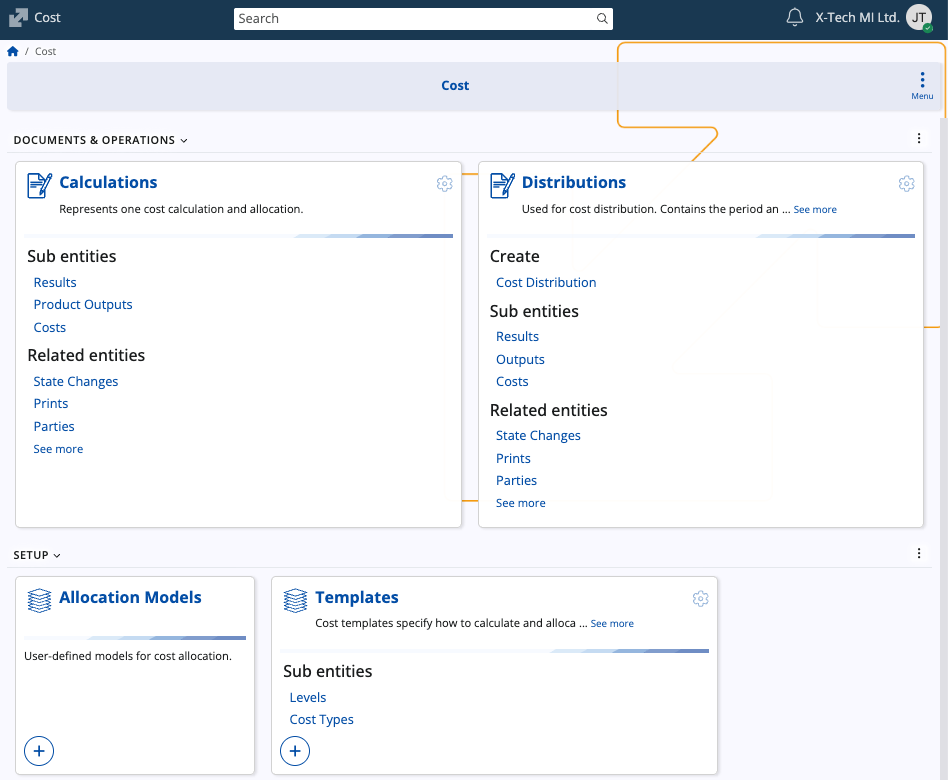

Cost
Cost represents the monetary value of resources consumed during an enterprise’s operations.
In ERP.net, the Cost submodule supports the management of cost calculation, allocation, and distribution, ensuring that all incurred costs are accurately assigned to products, departments, or cost centers. It provides the framework for cost accounting within ERP.net, allowing organizations to maintain precise control over production and service expenses.

Structure
The page includes documents for performing cost calculations and distributions, together with setup elements that define allocation rules, cost templates, and types.
Documents & Operations
| Document / Operation | Purpose |
|---|---|
| Calculations | Represents a single cost calculation and allocation run. Each calculation uses a defined Cost Template to determine how costs are gathered and distributed among cost objects. |
| Distributions | Used to perform cost distribution for a specific period and store. It defines cost inputs, weighting factors, and distribution results according to the configured cost types and allocation rules. |
Setup
| Setup | Purpose |
|---|---|
| Allocation Models | User-defined models specifying how costs are allocated across cost centers or activities. |
| Templates | Define the structure and logic of cost calculations. Templates determine how costs are calculated and allocated. |
| Types | Define individual categories or classifications of costs (e.g., Labor, Transport, Packaging, Duties and Taxes). Each type can be activated or deactivated according to business needs. |
See also
For more detailed explanations of cost calculation, distribution, and related processes, refer to the following articles:
- Add production function
- Calculate distribution function
- Cost distribution
- Distribution business rules
- Distribution generation procedures
Note
The screenshots taken for this article are from v.26 of the platform.